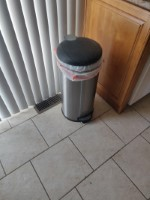
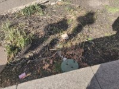

Every week I am reminded of the importance of this project. Many people don’t realize the volume of trash that they generate on a regular basis. People often focus on the obvious items like food waste and single-use plastics, but they don’t always realize that almost every item in our day to day lives is designed to be disposable eventually.
Nowhere better is this illustrated than in this week’s Trash Report. Items that can break are items that can be discarded. As a culture we should move in the direction of long-lasting, robust materials and repairable products. Products that need to be thrown away after being broken or worn down are not sustainable, they lead to an endless cycle of manufacturing future waste. This is already starting in some areas, such as the right-to-repair movement in the electronics industry. Additionally, some legislators, such as those in the EU, have begun creating laws related to cutting down on electronic waste (mandating removable batteries, standardizing USB-C as a charging cable). These kinds of ideas could be applicable to every field, if we put more thought into sustainability. I hope that by reading this blog you can gain an understanding of how much trash you generate yourself, so that you may try to limit it (either by limiting excessive purchases or by buying repairable products). Of course, I am not the first (nor the only) person to have noticed a waste problem and decided to tackle it. Here are some other author’s thoughts on this issue:
In Tori Lee’s interview with Professor Sarah Newman, she talks extensively about trash from an archeological perspective, discussing how it can be used to get an idea of what the day to day life of past cultures was like, and how it differs from ours. She had some interesting perspectives, notably she talked about how “throwing things away” is a bit of a misnomer, since there is no real “away” to throw them to. “As inhabitants of industrialized cities, we often think of landfills as places set apart for things to decay, deteriorate and vanish, but in reality, landfills tend to offer ideal conditions for preservation.” (Newman) Waste can and does come back into our lives regularly, but we’d be mistaken for thinking that it's inevitable, and past cultures demonstrate that it’s possible to live in a more sustainable society.
In Chapter 2 of Brian Thill’s book “Waste”, he discusses trash in great detail, covering many facets of it. One unfortunate idea he brought up was that of the “trash familiar”, a piece of garbage that follows you around everywhere and that you see everyday for weeks or months at a time. “Last winter, after the final leaf fell from the tree nearest my kitchen window, I spotted a plastic bag coiled in its thin branches, a common enough site wherever barren trees and a steady supply of litter obtain.” (Thill 22). As seen here, the example he used was a trash bag in a tree that you can’t get down and that stays up there for months. Another thing he discussed which I thought was interesting was the idea of digital hoarding – people are much less likely to clean up digital files on their computer than physical files in their desk, and may not even consider them garbage. As a digital preservationist, I thought this was an interesting perspective to have. It also sort of conflicts with this blog, of which the entire purpose is digital preservation of my trash.
In Vik Muniz’s guest essay for the New York Times, he talks about the meaning of art in the modern industrial world, and how people respect it less when it’s mass produced. He also discusses the idea that landfills are sort of a form of museum, where you can study the past – and that there’s a sort of ironic opposite between fragile objects we want to preserve (e.g. the collections of the National Museum of Brazil in Rio de Janeiro), and eternal objects that we want to go away (the non-biodegradable trash in the Gramacho landfill). As someone with an interest in preservation and museumes, I thought this was a really fascinating parallel. The question of the meaning of physical objects in a digitally preserved world was thought-provoking as well. “As our inventory of digital objects expands, what does this mean for physical objects? What legacy will museums of the future hold?” (Muniz). Perhaps there will come a time when almost all physical objects wind up in a landfill of some kind.
In Amit Samsukha’s article for Forbes, he discusses the roles that various technologies have in waste management. For example, AI tools that can automatically sort recyclables which can save workers time and make recycling much easier to implement for companies, hopefully leading to more of it. E-waste kiosks were another suggestion, offering people money in exchange for electronic waste (such as old phones). “Such machines permit people to exchange their electronics for cash right on the spot.” (Samsukha) One curious thing I noticed about his article was that he said the same thing about AI tools three different ways: “Smart Waste Bins”, “AI Recycling Robots”, and “AI Waste Sorting” are all fundamentally the same technology. This leads me to believe that either he was trying to capitalize on the AI buzzword, or else there really isn’t much progress in the waste management technologies sector other than a bunch of AI startups trying to gain market share.
One fellow trash project on the internet is literally called The Trash Project. They operate primarily out of New York City, and seek to make an impact by drawing people’s attention to the trash problem in order to help them reduce their consumption. They also do regular trash cleanups in various areas. The main way that they grab people’s attention is by using bright pink trash bags. These are designed to draw your eye and call attention to the trash bags, where you might not even see them if they were normal black ones. In this way, it makes it obvious wherever there is garbage, and helps to make a normalized part of life seem less normal. I think this is a brilliant idea, and it’s probably much more effective at reaching a large audience than one person’s tiny blog post series.
Compared to these authors, I think that my project is fairly activist and awareness-raising, even if it’s limited in scope. I do think it also has a lot to do with cataloguing, even if Thill might argue that it could be considered digital waste. In a different sense, it could be considered a museum of modern day culture, one that archeologists of the future might study. I can only hope that with all of these different perspectives in mind, people will eventually realize the severity of our waste problem and take action to fix it.
Return to Top